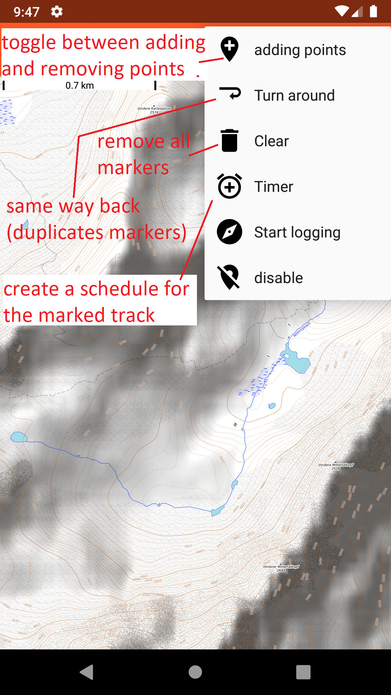
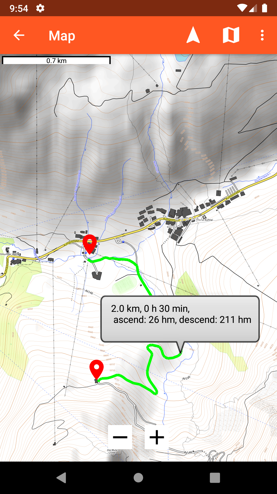
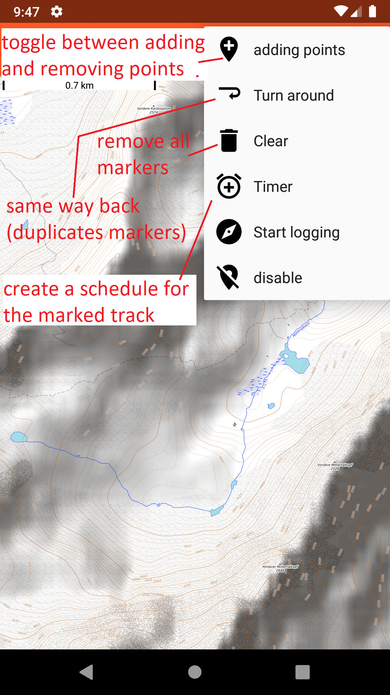
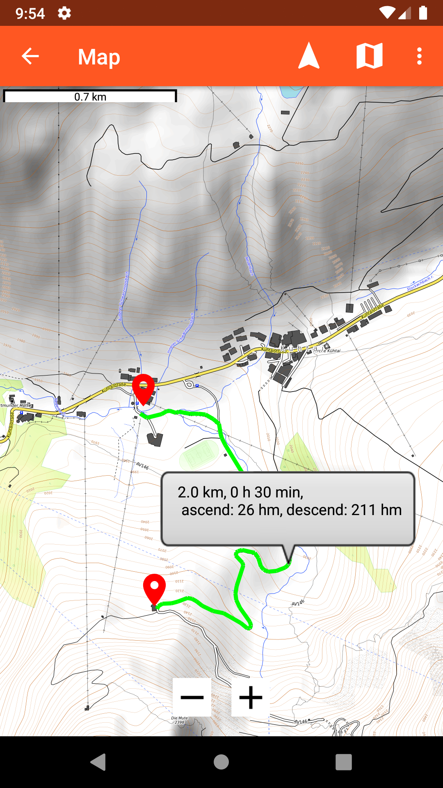
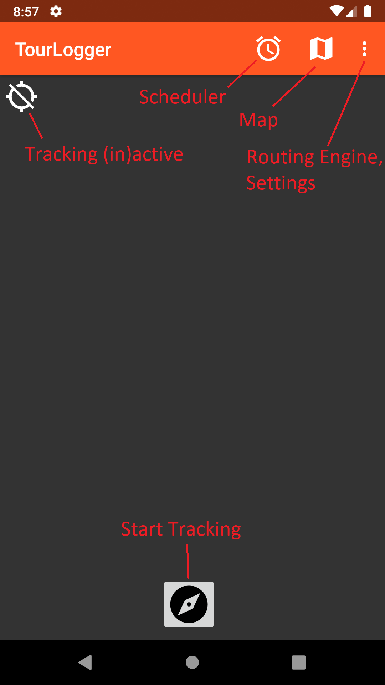
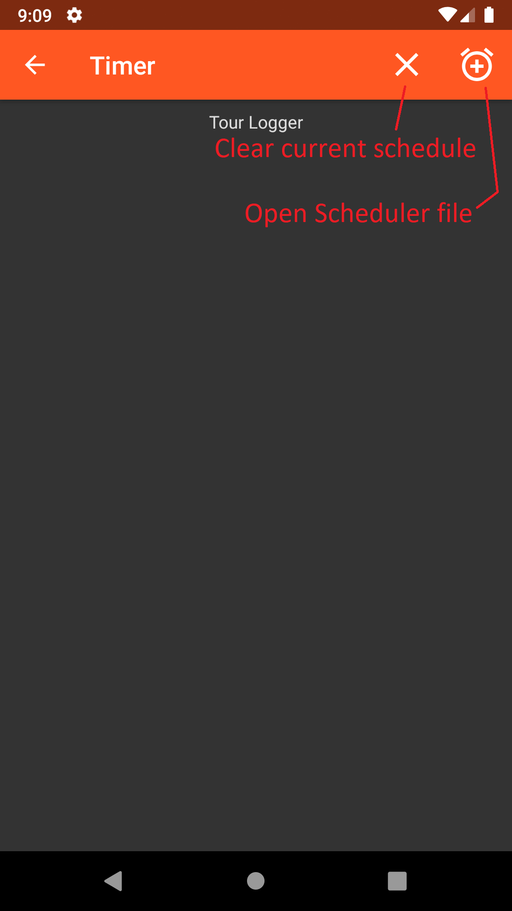

Information
No Responsibility. The App may be buggy. Updates may be released here somewhen in the future. Bug reports are always welcome (per mail). Copyrights of contents may belong to other organisations.
Install
For installing the app, use the above apk. Install from unknown sources must be enabled!
map
Map
This displays an OpenTopoMap, allowing you to navigate. The tiles will be cached, providing some sort of offline availability. You can enable a latitude/longitude grid, as well as your current position. Additionally you can enable waypoints, which allows you to add waypoints upon long presses. You can use the Graphhopper Routing Engine to find a suitable path over the waypoints. The App will tell you an approximate length, ascend and travel time. (In the current version, it uses 6km/h and 600hm/h) Additionally a tour schedule for the waypoints can be exported, which will use the routing Engine to estimate arrival times for each waypoint. The routing requires some pre computed files for Graphhopper: (unpack it best into internal storage/graphhopper)


 




Tour Logging
You can log your movement to a gpx file, the update intervals can be adapted in the settings.


alarm
Tour Schedule
In the Tour Schedule View you can open a pre-planned tour schedule (*.schedule). The Waypoints will be displayed with their GPS coordinates and their last reaching time. If the GPS is enabled, the app will regularly poll your position and will advance to the next waypoint if the previous one has been reached. The app will notify you with an alarm if you have not reached the waypoint on time. In the current Version, it will skip all waypoints which lie in the past upon loading the file.


Settings
You can log your movement to a gpx file, the update intervals can be adapted in the settings.